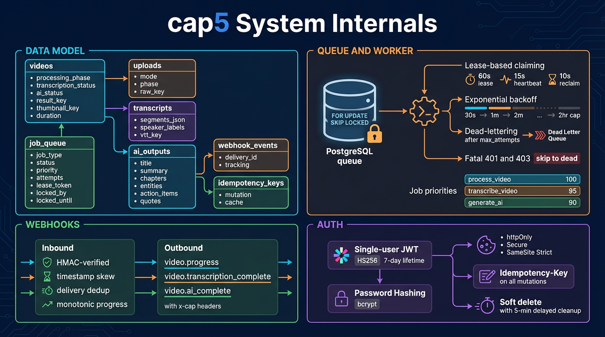

Sets status = 'leased', assigns locked_by, locked_until, fresh lease_token
Increments attempts counter on each claim
Worker claims one job per tick (WORKER_CLAIM_BATCH_SIZE is reserved/dormant)
Lease duration: 60 seconds default
Heartbeat: extends locked_until every 15 seconds (WORKER_HEARTBEAT_MS)
Reclaim tick: every 10 seconds (WORKER_RECLAIM_MS), batch size 25
Heartbeat loss: if heartbeat returns 0 rows, logs job.heartbeat.lost
Health check: GET /health on media-server before claiming process_video
Exponential backoff: LEAST(7200, 30 × 2^(attempts-1)) seconds
Backoff range: 30s → 60s → 120s → ... capped at 2 hours
Fatal errors: HTTP 401/403 skip straight to dead (no retries)
Dead state: triggers markTerminalFailure() on the video record
| Phase | Rank |
|---|---|
| not_required | 0 |
| queued | 10 |
| downloading | 20 |
| probing | 30 |
| processing | 40 |
| uploading | 50 |
| generating_thumbnail | 60 |
| complete | 70 |
| failed | 80 |
| cancelled | 90 |
Media processing can be complete while transcription or AI is still running — the three tracks are independent.
Endpoint: POST /api/webhooks/media-server/progress
HMAC verification using MEDIA_SERVER_WEBHOOK_SECRET
Timestamp skew enforcement — rejects stale webhooks
Delivery deduplication via delivery ID tracking
Monotonic progress — phase rank only moves forward
Ledger: all events recorded in webhook_events table
Events: video.progress, video.transcription_complete, video.ai_complete
Delivery: JSON POST to per-video webhookUrl
Headers: x-cap-timestamp, x-cap-signature, x-cap-delivery-id
Signing: OUTBOUND_WEBHOOK_SECRET (falls back to MEDIA_SERVER_WEBHOOK_SECRET)
Retries: max 5 attempts via deliver_webhook job
Payload: { event, videoId, phase?, progress?, timestamp }
First run: GET /api/auth/status returns setupRequired: true → create initial account via POST /api/auth/setup
Login: POST /api/auth/login with email/password → sets httpOnly cap5_token cookie
Validation: GET /api/auth/me on app load checks cookie validity
Logout: POST /api/auth/logout clears cookie and context
Protection: RequireAuth wrapper redirects unauthenticated to login/setup
JWT (HS256) — stateless, 7-day lifetime, JWT_SECRET env var
bcrypt — password hashing with salt rounds
Cookie: httpOnly, Secure, SameSite=Strict — no JS access
Idempotency: all mutations require Idempotency-Key header
Webhook HMAC: timestamped signatures on all inbound and outbound
Soft delete: 5-minute delayed cleanup_artifacts job for safe recovery window

Infographic will appear here once generated